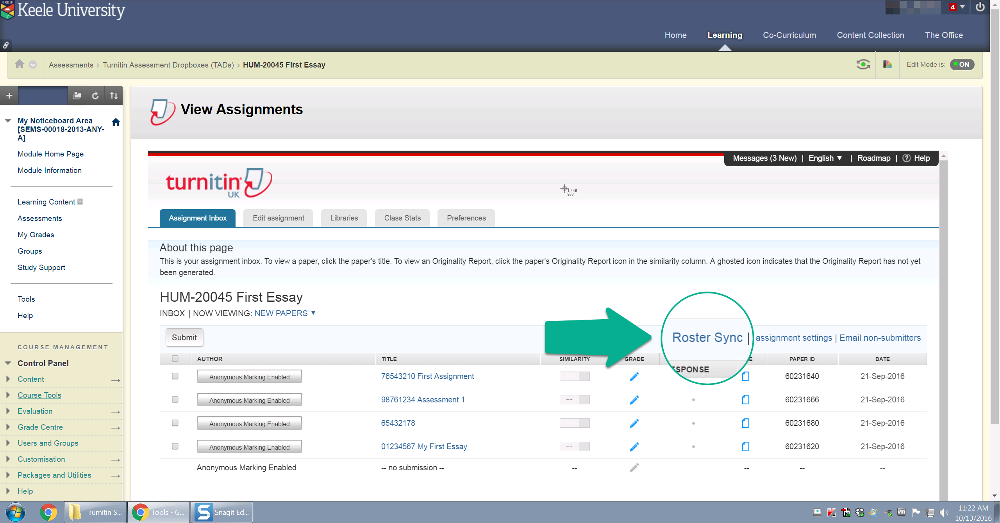

It is recommended that you perform Roster Sync when first setting up a Turnitin dropbox and before students have made any submissions. For further guidance on how to create a Turnitin dropbox, please see here.
Using Roster Sync

To ensure that Turnitin has synchronised students enrolled in your KLE module, Roster Sync should always be applied. Please note, this will not stop students wishing to submit, however, it will prevent names from automatically populating when making their submission.
From within the Turnitin inbox, select Roster Sync from the options available on the right hand side.
Clicking Roster Sync will force Turnitin to re-load the list of students. Any missing students will now be added back in.
Once the brief message disappears, all of your students should be loaded into the Turnitin dropbox.